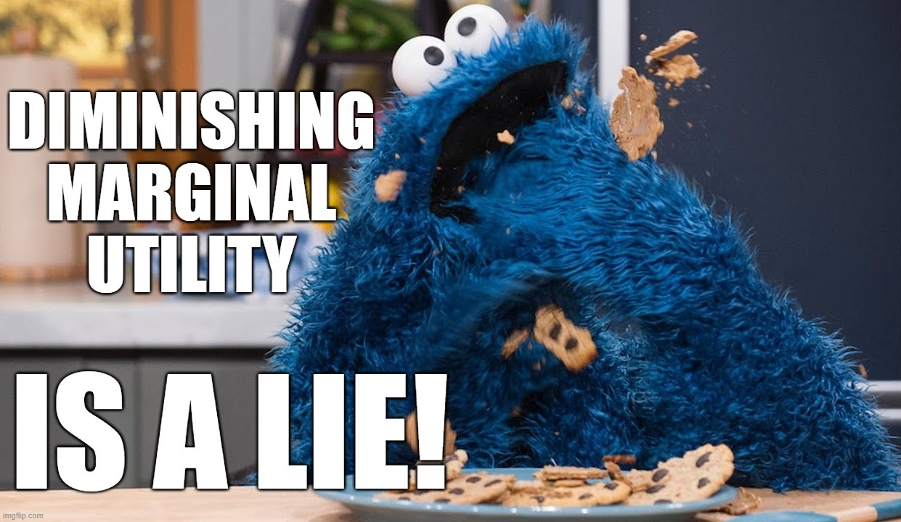
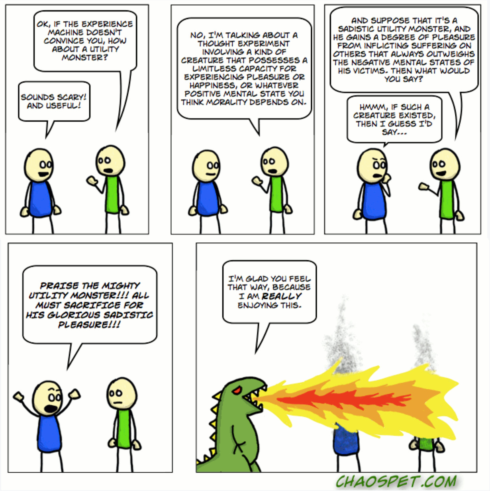

The Utility Monster is... other people!
Imagine waking up every evening, putting on your happy face, walking over to your immaculately laid out recording studio and… Enthusiastically unwrapping that mysterious package someone just sent you… You have no idea what it is, no really! You don’t! But wait, it is the last Funko-Pop you were missing to have a complete set of the new Star Wars™ range, brought to you by Disney™! Such a surprise. You turn enthusiastically to the camera, holding the figure up at just the right angle and squealing with delight, little tears of joy in the corner of your eyes as you watch the comments roll in on the livestream you are running to [your streaming service of choice].
OMG! The Meaning of Life finally arrived!! [1]
“Wow, look at that1!!”
“I wish I had your luck”
“Live that Dream!! #beyourbestself!”
The occasional less enthusiastic comment is quickly drowned in a stream of relentless positivity from the thousands of young fans who tune in religiously to watch you tear open new toys, every night, always with a smile and a joyous cry. You put the toy down beside all the others on the shelf behind you, and sit down at the desk.
“I love it, his little eyes are so cute.”
“You live that dream too! #youbeyou.”
Unboxing on livestream gets views, sure, but the thing that separates you from the crowd is that you engage with the fans, let them know that you really care. What could have been a slowly teased out 5-7 minutes of unboxing turns into a couple hours of chatting online. You pay particular attention to those sparkling names that indicate silver- and gold-tier patreons (they send you a lot of money, every month, they need some direct contact to keep them hooked!).
You have this amazing life — free stuff and copious ego-affirming messages from your adoring fanbase. So why are you so unhappy, and why don’t you stop?
Livestreaming, particularly for successful streamers, can quickly become a form of emotional labour, in which the streamer begins to feel a sense of responsibility to their audience, reinforced through constant interaction with them. A streamer who regularly receives messages about how much they mean to their audience, how their streams have improved the fans’ lives or saved them from depression… can feel selfish to even think about stopping, even after reaching the point at which they would rather eat the next box than pretend to be excited about opening it. One possible explanation then, of why streamers don’t stop (and this may seem counter-intuitive) is that they are good Hedonistic Utilitarians, caught in the clutches of… the utility monster!

As long as you don’t look like a cookie, you’ll be fine. [2]
Hedonists believe that pleasure is the only thing that ultimately makes our lives go well for us and that pain is the only thing that ultimately makes our lives go badly for us.
Not just that, they also believe that this is true not just for themselves, but for others as well. Hedonistic Utilitarians value everyone equally and want what is best for all of us. How? By maximising the total amount of happiness (pleasure minus pain) in everyone’s lives. That is where we run into trouble. Because hordes of other people really enjoy watching your seemingly fantastic life of endless free stuff. And now that you are broadcasting this life online, there are enough other people gaining pleasure through watching you that the total enjoyment (pleasure) they get out of your emotional labour, massively outweighs the misery (pain) that you are inflicting on yourself.

Of course, this isn’t the classical version of the utility monster. The utility monster objection to hedonistic versions of Utilitarianism originated with Robert Nozick, in 1974, as he attempted to discredit Utilitarianism. In his version, the utility monster is a particular individual who gains massively more pleasure from ordinary activities than anyone else does, and who ought then, logically to be pleased at the expense of displeasing everyone else. According to Nozick, the theoretical possibility of such a creature makes Utilitarianism implausible as a theory, as Utilitarians would have to say that sacrificing everyone else’s happiness to the utility monster would be the morally right thing to do.

We apologise to any fire-breathing dinosaurs that are offended by this depiction. [3]
Now, there are simple responses available to a committed Utilitarian, the first of which is to agree. [4] If such a monster in fact existed, it would be morally right to sacrifice all others for the sake of the monster. Fortunately for us, this response goes, the monster is merely a hypothetical. Another response is that the objection is weak, because utility monsters are impossible…
But this brings us back to the story with which we started. Our livestreamer, if they are a good Hedonistic Utilitarian, seems to be committed to continuing their livestream for as long as the pleasure it generates in their audience outweighs the misery of the experience for them.
If that is what utilitarianism demands, it is too much. The theory is over-demanding and must be false. No viable moral theory should demand that anyone spends their life pretending to enjoy showing other people what’s inside thousands of boxes. If you accept our argument here, the utility monster does exist, and it is… other people.
◊ ◊ ◊
Notes
[2] Created by the authors using imgflip.com/memegenerator
[3] Source: https://chaospet.com/230-utility-monster/. Used with the artist’s permission.
[4] (Amongst philosophers, this is known as ‘outsmarting’ one’s interlocutor, after JJC Smart).
◊ ◊ ◊

Dan Weijers is a Senior Lecturer in Philosophy at the University of Waikato. His main research interests are wellbeing, moral judgments, and the ethics of new and emerging technologies. Dan is a founding co-editor of the International Journal of Wellbeing, founding member of the Australasian Experimental Philosophy Research Group, international editorial board member of Rowman & Littlefield’s book series on “Behavioural Applied Ethics”, and editorial review board member for the International Journal of Technoethics. He has published in philosophy, psychology, economics, and public policy journals. More information and links to publications can be found at www.danweijers.com.
Nick Munn is a Senior Lecturer in Philosophy at the University of Waikato. He works on Political Theory (with a focus on issues of enfranchisement) and Applied Ethics (with a focus on the status of virtual worlds and virtual actions). His publications include The Reality of Friendship within Immersive Virtual Worlds (2012), Friendship and Modern Life (2017), Against the Political Inclusion of the Incapable (2018), and Political Inclusion as a Means of Generating Justice for Children (2020).
Lorenzo Buscicchi is a PhD Candidate at the University of Waikato. His thesis, which employs the methods of affective science, is on the nature and value of pleasure. Lorenzo is the lead author of ‘The Paradox of Happiness: The more you chase it the more elusive it becomes’ in The Conversation Yearbook 2019: 50 Standout Articles from Australia’s Top Thinkers. He was previously the scientific director of the Global Happiness Organization.
Nick Munn, Lorenzo Buscicchi, Dan Weijers on Daily Philosophy: